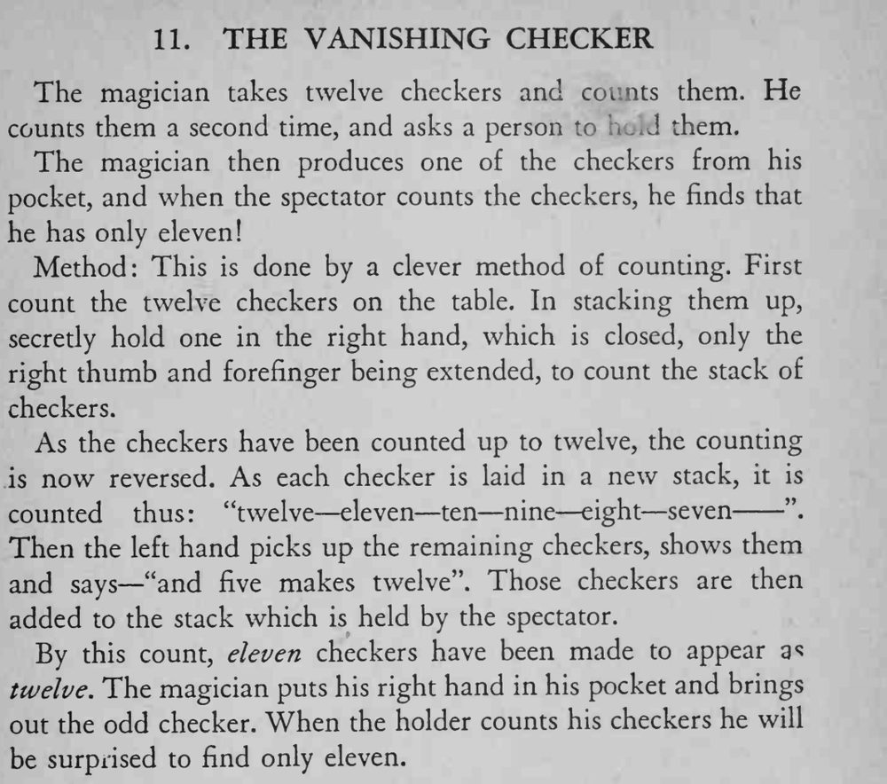

魔术师数出十二枚棋子，请观众再数一遍却只有十一枚，第十二枚随后从他口袋里变了出来。
倒数的节奏和「再加五枚」那句话要说得自然，观众才不会跟着重数。

The magician takes twelve checkers and counts them. He counts them a second time, and asks a person them. The magician then produces one of the checkers from his pocket, and when the spectator counts the checkers, he finds that he has only eleven! Method: This is done by a clever method of counting. First count the twelve checkers on the table. In stacking them up, secretly hold one in the right hand, which is closed, only the right thumb and forefinger being extended, to count the stack of checkers. As the checkers have been counted up to twelve, the counting is now reversed. As each checker is laid in a new stack, it is counted thus: "twelve eleven ten nine eight seven ". Then the — left hand picks up the remaining checkers, shows them and says "and five makes twelve". Those checkers are then added to the stack which is held by the spectator. By this count, eleven checkers have been made to appear a* twelve. The magician puts his right hand in his pocket and brings out the odd checker. When the holder counts his checkers he will be surprised to find only eleven.